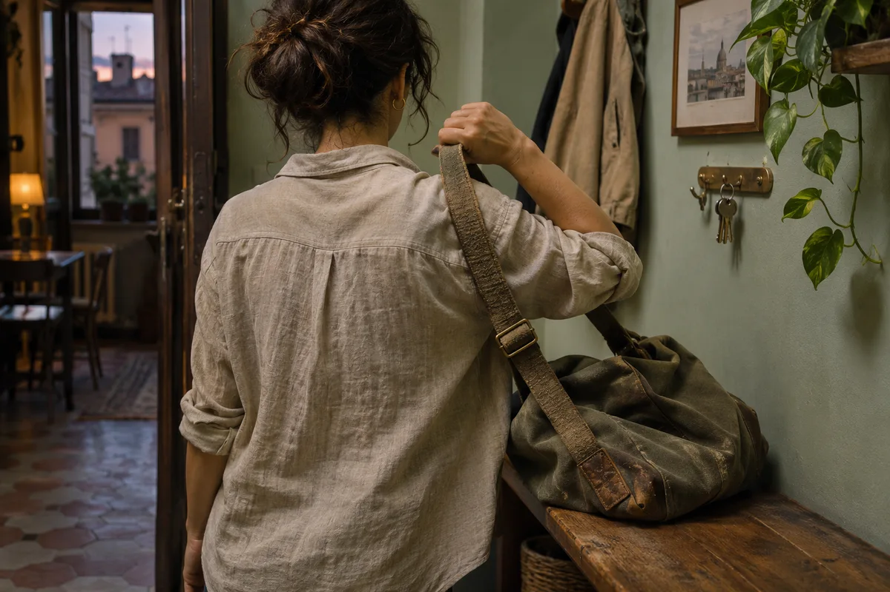

Corpo e ascolto
Torna al quadernoIl peso di una giornata sulle spalle

A volte ci accorgiamo di come stiamo soltanto quando posiamo la borsa e lasciamo scendere le spalle.
La porta si chiude, la borsa finisce sulla panca. Chiavi ancora in mano, lasci scendere le spalle. Solo allora ti accorgi di quanto le avevi tenute sollevate. Se qualcuno ti avesse chiesto com’era andata la giornata, forse avresti risposto semplicemente «sono stanco».
Quel gesto racconta qualcosa di più preciso. In quale momento hai cominciato a stringere la tracolla? Durante la telefonata prima di uscire, o aspettando l’autobus che tardava? Puoi lasciare aperta la domanda. A volte il racconto di una giornata comincia proprio dal momento in cui finisce.
La telefonata che torna in mente
La sera, mentre metti sul fuoco l’acqua per la pasta, ti torna in mente la voce di tua sorella. Ti aveva chiesto se potevi passare da vostra madre. Avevi risposto di sì dal marciapiede, con l’autobus già in vista. Adesso ricordi un particolare curioso. Per tutta la telefonata avevi tenuto la borsa sulla spalla, benché accanto a te ci fosse una panchina libera.
Forse avevi semplicemente paura di perdere l’autobus. Forse stavi già facendo posto a quella visita dentro una settimana piena. Lo stesso gesto può accompagnare esperienze diverse. Che cosa ricordi di quella richiesta? E che cosa avresti voluto dire, se avessi avuto il tempo di sederti?
Dire come è andata, con parole tue
A tavola qualcuno ti fa la solita domanda sulla giornata. Stavolta, prima di rispondere, ti torna in mente la panchina. «Oggi ho detto di sì troppo in fretta», racconti. Da lì la conversazione prende una strada concreta. Domani puoi richiamare tua sorella, chiederle a che ora pensava di andare, capire quanto tempo avete entrambe.
Magari, ripensandoci, scopri che quella visita ti fa piacere. A pesarti era l’idea di dover decidere tutto alla fermata. È una differenza piccola, eppure cambia il racconto che puoi fare di te quella sera. La borsa intanto è rimasta sulla panca dell’ingresso. Le chiavi, finalmente, sono al loro posto.